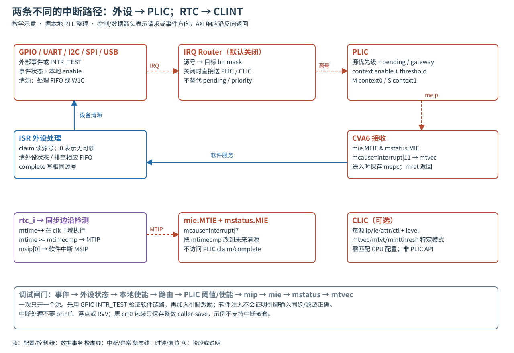

READ · TRACE · BUILD · EXPLAIN
14 · CLINT、PLIC 与 CLIC
追踪一次中断的产生、屏蔽、路由、接收、清源和完成。
分别配置 timer、软件中断和 PLIC 外部源，解释 pending、claim、complete 和清源的区别；知道何时才可启用 CLIC。前置：CSR、trap、GPIO。场景：事件状态为1，但 CPU 不进中断；或 mret 后立刻再次进入。
中断类型与异常入口

在 RV64，mcause 最高位区分中断/异常；机器软件中断 cause=3、机器定时器=7、机器外部中断=11。mstatus.MIE 是总门，mie 对应位是分类门；设备本身和 PLIC 还有各自的门。进入 trap 保存 mepc、设置 cause/状态并转 mtvec；mret 恢复返回状态，不负责清设备。
CLINT 计时与定时中断
| 基址 0x02040000 + 偏移 | 语义 | 安全访问要点 |
|---|---|---|
| 0x0000 | hart0 MSIP bit0 → 软件中断 | 写1请求，写0清除；不使用 PLIC 中那个未接出的 msip_o |
| 0x4000/4004 | hart0 MTIMECMP low/high | mtime≥mtimecmp持续触发；设到未来清源；更新时防暂态比较值 |
| 0xbff8/bffc | MTIME low/high | high→low→high，两次high不同则重读，防低32位回卷撕裂 |
// 分两次 32-bit 写 64-bit compare，临界区内关闭相关中断
MTIMECMP_LOW = 0xffffffff;
MTIMECMP_HIGH = (uint32_t)(deadline >> 32);
MTIMECMP_LOW = (uint32_t)deadline;
fence();
// 写成 UINT64_MAX 可暂时不触发；ISR 推到未来，不用 PLIC complete。rtc_i 经 clint_sync_wedge 同步到 clk_i 后，rising edge 使 mtime+1。MTIME比较使用系统时钟域的寄存器；不需要让CPU慢到RTC频率。当前 clint_get_mtime 无 high重读，clint_set_mtimecmpx 直接 high→low；clint_sleep_until 的 if (mtime < target) return 与“等待未来时间”的语义相反。教材使用独立 ticks/compare，不调用这条 sleep路径，也不修改原库。
PLIC 源编号、上下文与服务协议
PLIC（Platform-Level Interrupt Controller，平台级中断控制器）把外设中断按优先级送到 hart 的 M/S context。本配置58源包含保留源0，优先级3bit；机器 context0、监督 context1。每源网关限制已发出未完成事件，claim 选择可服务源并消费其待处理状态；complete 写回同一源号通知网关允许下一事件。外设电平未清就 complete，可能导致中断再次触发。
| 内部源 ID（当前 packed 排布） | 来源 |
|---|---|
| 0 / 1 | 保留0 / UART |
| 2..16 | I2C，依次 fmt_threshold、rx_threshold、fmt_overflow、rx_overflow、nak、scl_interference、sda_interference、stretch_timeout、sda_unstable、cmd_complete、tx_stretch、tx_overflow、acq_full、unexp_stop、host_timeout |
| 17 / 18 / 19 | SPI error / SPI event / USB |
| 20..51 | GPIO0..31 |
| 52/53、54/55、56/57 | VGA write/read error、DMA write/read error、cores write/read error（cores先汇总） |
| 基址0x04000000 + 偏移 | 动作 |
|---|---|
| 4 × source | source priority（1..7才可超过阈值0） |
| 0x2000 + 4 × floor(source/32) | context0 IE bit[source%32]；context1 从0x2080开始 |
| 0x200000 / 0x200004 | context0 threshold / claim-complete |
| 0x201000 / 0x201004 | context1 threshold / claim-complete |
- 先关闭相关门；配置外设触发，清旧事件。
- 设源优先级、context enable、threshold，准备好 mtvec/trap 栈；最后打开 mie.MEIE 和 mstatus.MIE。
- ISR读claim。0表示没有可领取源；非0先核对源号，再处理对应外设，不盲目套同一清除值。
- 清外设、排序、complete相同源号；退出ISR。必要时循环领取，但限制服务预算避免饿死前台。
IRQ Router 与 CLIC 配置
IRQ Router 在 0x02080000，每源32-bit目标掩码，偏移4×source；它把一个事件送往选定目标，不保存完整的优先级/领取语义。禁用时 SoC 直接扇出输入。启用后要从生成配置查 target 位编号，不能假设 bit0 永远就是所有目标。读写有效源范围以 NumSources 为准。
CLIC（Core-Local Interrupt Controller，核本地中断控制器）每核窗口0x40000，基址0x08000000起。全局 cliccfg 在+0，源寄存器在+0x1000+4×id：ip bit0、ie bit8、attr.shv16、attr.trig[18:17]、attr.mode[23:22]、ctl[31:24]。本地 adapter 只声明支持正边沿/正电平触发，不能写任意模式后假定有效。
sw/tests/clic_basic.spm.S 演示 mtvec模式3、mtvt CSR0x307、mintthresh0x347和源31；这些不是默认 PLIC 程序可直接照抄的通用入口。需要 Cfg.Clic、CPU RVSCLIC 配置、向量表布局、保存现场及本地实现版本共同匹配；SELCFG=2相关测试配置也不自动改变全部源码profile。此扩展支持范围以本地实现为准，不混同标准机器外部中断。
GPIO 与定时中断验证实验
# 仓库根；不运行仿真
bash docs_codex/learning/scripts/build_advanced.sh timer
rg -n 'trap_vector|MTIMECMP|GPIO_SOURCE|RV_PLIC_CC0' docs_codex/learning/examples/advanced.c
rg -n 'clicint|mintthresh|mtvt|mtvec' sw/tests/clic_basic.spm.Stimer 是 ADV_STAGE=2，默认 PLIC、GPIO、RTC启用，CLIC/Router关闭，独占单hart。生成 evidence/adv-timer-spm.XXXXXX；运行见统一命令。预期 GPIO服务≥1、timer≥2、errors=0、VIP SUCCESS；故障注入遗漏GPIO测试触发时应超时返回14。计时器ISR采用 ticks()+8，表示至少8tick后的预约，不宣称精确无抖动周期。
排查顺序：INTR_STATE→外设enable→PLIC source/priority/IE/threshold→mip→mie→mstatus→mtvec→ISR→clear/complete。Timer独立看mtime是否前进、cmp与mie.MTIE。回传寄存器值、adv_mcause/mepc/mtval、两个ISR计数和短波形。不要在 ISR printf 掩盖重入和延迟问题。
1. MTIP挂起为什么读PLIC claim得不到7？
timer直接从CLINT进入CPU，不通过PLIC；cause7是CPU中断类别，不是PLIC source编号。
2. GPIO0的PLIC编号为何是20而不是0？
编号来自本地packed中断向量，低位已有保留位、UART、I2C、SPI和USB。不能用引脚号直接替代源号。
3. 原crt0包装能直接承载带浮点/RVV的ISR吗？
不能默认如此。它保存整数caller-save，C ABI负责被调者保存的整数寄存器；没有完整F/V现场保存和嵌套策略。